Подготовьте площадку для нового строительства или наведите порядок на объекте без лишних хлопот.
Компания Эко Вортекс предоставляет комплексные услуги для бизнеса в Краснодаре. Мы берем на себя весь цикл работ: от подготовки территории до финальной зачистки. Мы обеспечиваем официальный вывоз строительного мусора, предоставляя заказчику полный пакет отчётных документов. Ниже представлены основные направления нашей работы:
Компания «ЭКО-ВОРТЕКС» помогает жителям навести идеальный порядок на своих участках, дачах и в квартирах. Нашей главной задачей является качественный вывоз строительного мусора Краснодар и помощь частным заказчикам в избавлении от любого мусора. Мы берем на себя самую тяжелую и грязную работу, освобождая вас от лишних хлопот и сохраняя ваши силы. Все собранные отходы мы официально утилизируем, чтобы вы могли быть спокойны за экологию.
Демонтаж
Даже на частном участке снос старых построек требует спецтехники и аккуратного подхода. Мы быстро и безопасно разбираем ветхие дачные домики, старые сараи, гаражи и пристройки любой сложности. Заказывая демонтажные работы Краснодар в нашей компании, вы получаете помощь от А до Я: от разрушения старого фундамента до финальной уборки двора и направления всего объема мусора на легальную утилизацию.
Вывоз веток, пней и порубочных остатков
После расчистки сада или спила деревьев остается много древесного мусора, который тяжело убрать руками. Мы оперативно забираем порубочные остатки прямо с вашего участка. Погрузка крупных веток, тяжелых корней и пней выполняется нашей собственной спецтехникой — это быстро и безопасно для вашего ландшафта.
Установка контейнеров
Если у вас идет масштабный ремонт или стройка, мы привезем удобный бункер-накопитель. Установка контейнера происходит прямо в день обращения, а стандартный срок аренды составляет 3 дня. Этого времени вполне достаточно, чтобы спокойно собрать и выбросить все ненужное без спешки.
Вывоз мусора Газелями
Когда к дому не может подъехать тяжелый грузовик или вам нужно избавиться от мусора после ремонта в квартире, мы используем маневренные Газели. Это идеальный и недорогой вариант для городских улиц и узких дачных проездов. А чтобы вам не пришлось таскать мешки на себе, наши крепкие ребята организуют аккуратный вынос мусора Краснодар прямо из ваших дверей.
Механизированная уборка с грунта
Убрать отходы, которые долго лежали вперемешку с землей, обычными лопатами практически невозможно. В таких случаях мы осуществляем вывоз мусора Краснодар с грунта механизированным способом. Наши маневренные экскаваторы-погрузчики полностью счищают мусор вместе с верхним слоем грязи. В результате мы вывозим весь мусор до идеальной чистоты, оставляя вам голую, ровную землю, полностью готовую к новым посадкам или строительству!

Демонтаж
Полный цикл демонтажных работ: от сноса сооружений любой сложности до финальной расчистки площадки. Мы гарантируем высокую скорость выполнения за счет собственного парка спецтехники и обеспечиваем официальную утилизацию строительных отходов с предоставлением полного пакета документов.

Вывоз веток, пней и порубочных остатков
Оперативный сбор и транспортировка крупногабаритных корней, выкорчеванных пней и веток собственной спецтехкой. Мы быстро освобождаем территорию от древесных остатков в любых объемах, направляя весь собранный материал на утилизацию.

Установка контейнеров
Постановка вместительных бункеров-нак опителей в день обращения. Стандартный срок размещения на объекте составляет 3 дня. Для юридических лиц при долгосрочной аренде мы предлагаем индивидуальные условия сотрудничества — для расчета тарифа свяжитесь с нашим менеджером.

Вывоз мусора Газелями
Маневренное и экономичное решение для транспортировки средних объёмов. Газели идеально подходят для объектов в городской черте или плотной застройке, куда не может проехать крупнотоннажная техника. Наши ребята организуют аккуратный вынос мусора прямо из ваших дверей.

Механизированная уборка с грунта
Специализированная расчистка территорий, где отходы смешаны с землёй. Наши экскаваторы-погрузчики счищают мусор вместе с загрязнённым верхним слоем. Вывозим мусор до идеальной чистоты — вы получаете ровную голую землю, готовую к застройке или посадкам.
А также мы занимаемся
мусора онлайн
Наглядный пример того, как комплексный подход к очистке территорий экономит время и силы владельцев частных домов и дачных участков.
В карусели представлены реальные кадры с наших объектов, где техника «ЭКО-ВОРТЕКС» готовит площадки к новому этапу использования. Мы обеспечиваем непрерывный цикл расчистки для бизнеса: профессиональный демонтаж ветхих строений сменяется мгновенной погрузкой отходов. Теперь наш главный акцент — это комплексный вывоз строительного мусора Краснодар, полностью закрывающий потребности юридических лиц и управляющих компаний.
Наши машинисты и бригады обладают огромным опытом, что позволяет нам комбинировать услуги для идеального результата. Если отходы или строительный бой долго лежали прямо на земле и вросли в траву, мы применяем механизированную уборку с грунта: наши экскаваторы-погрузчики аккуратно счищают мусор вместе с загрязненным верхним слоем, оставляя после себя идеально чистую, голую землю под новый газон или грядки. А после сезонной уборки сада мы с радостью возьмем на себя оперативный вывоз веток, массивных пней и порубочных остатков.
Мы подберем подходящую технику под любые условия вашего двора или улицы. Там, где крупнотоннажные машины не проедут из-за узких дачных проездов, наши крепкие ребята организуют аккуратный вынос мусора Краснодар прямо из квартиры или дома с последующей быстрой погрузкой в маневренные Газели. Для масштабного домашнего ремонта мы устанавливаем вместительные контейнеры-бункеры прямо в день обращения на стандартный срок 3 дня — этого времени как раз хватит, чтобы спокойно всё выкинуть без спешки.
Самое важное в нашей работе — забота о чистоте и вашем спокойствии. Мы гарантируем, что весь собранный с вашего участка объем отходов направляется исключительно на официальную утилизацию. Итогом нашего сотрудничества становится полностью свободная территория, готовая к вашим новым идеям, и полное отсутствие головной боли!
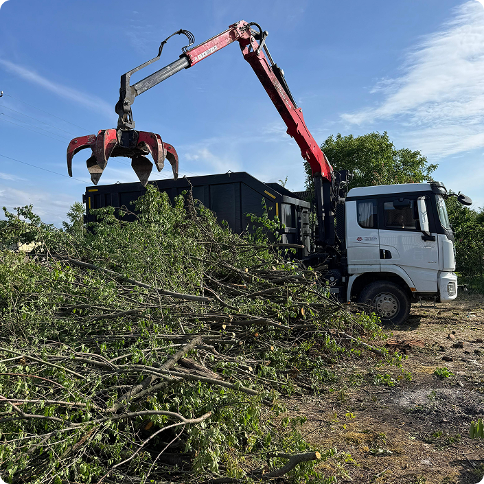
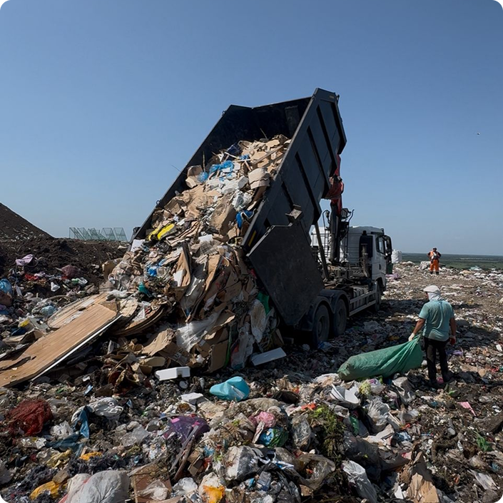
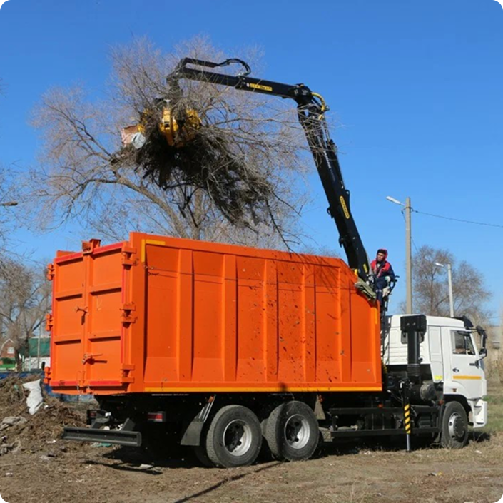
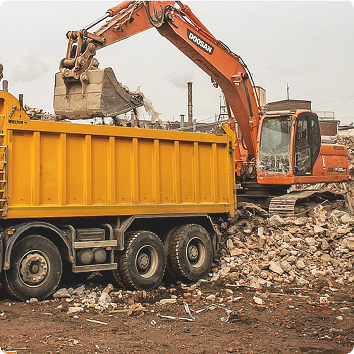
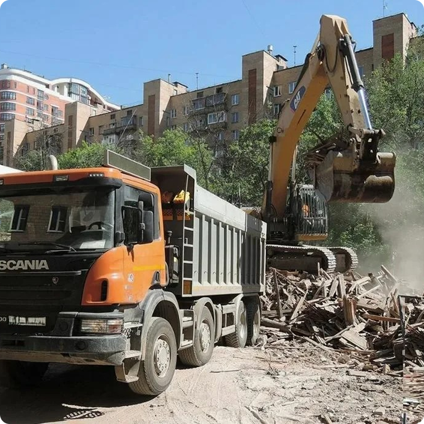
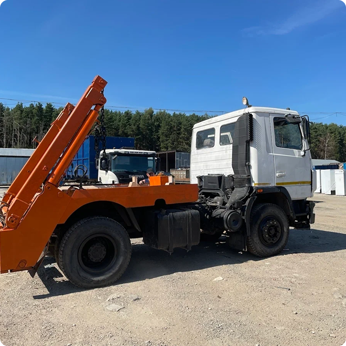
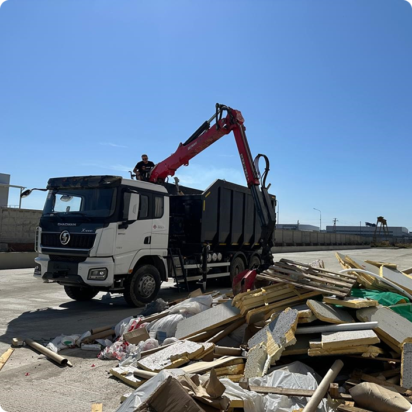
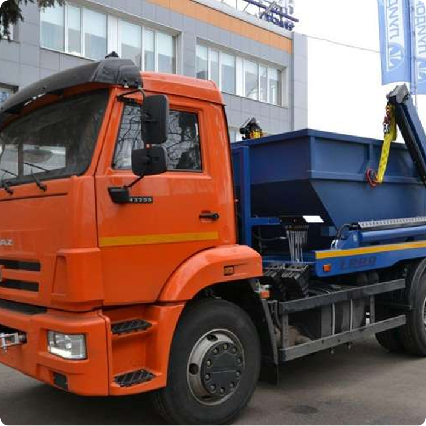
Частые вопросы: вывоз мусора Краснодар и расчистка частных участков
Перед тем как заказать профессиональный демонтаж на даче, механизированную очистку двора или вывоз строительного мусора после ремонта, у владельцев участков и квартир часто возникают вопросы о сроках, заезде техники и гарантиях чистоты. В компании «ЭКО-ВОРТЕКС» мы ценим открытость и простоту в общении с каждым клиентом, поэтому собрали для вас подробные ответы на самые популярные запросы.
Грамотная организация процесса позволяет нам комплексно избавлять вас от тяжелого труда. Мы не только аккуратно сносим старые домики, сараи и гаражи, но и оперативно устанавливаем удобные контейнеры для масштабного ремонта, забираем порубочные остатки (ветки и пни) после сезонной уборки сада, а также осуществляем вывоз мусора с грунта механизированным способом, счищая вросший мусор до идеально ровной и чистой земли под газон или грядки. Ознакомьтесь с информацией ниже, чтобы убедиться в нашем профессионализме и понять, как именно мы бережем ваши силы, обеспечиваем безопасность имущества и проводим официальную утилизацию всех отходов.
Что включает в себя демонтаж?
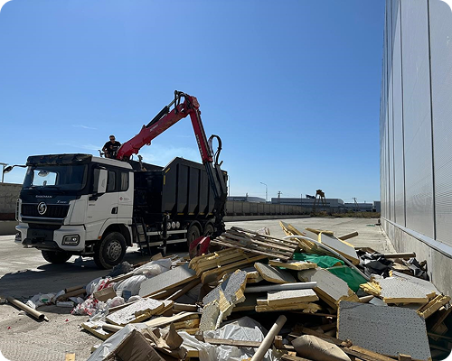
Комплексные демонтажные работы подразумевают полный снос старых строений, разборку конструкций и очистку участка. Мы собираем весь строительный мусор и обеспечиваем его официальную утилизацию.
Какая техника используется?
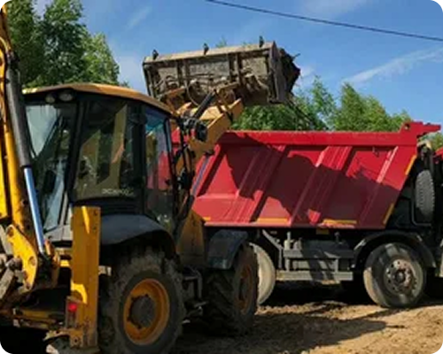
В нашем распоряжении находится собственный автопарк. Для демонтажа мы применяем современные экскаваторы и маневренные погрузчики и ломовозы, что позволяет выполнять заказы любой сложности максимально оперативно.
Куда вывозится мусор?
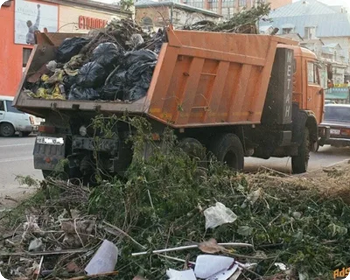
Мы строго соблюдаем экологическое законодательство РФ. Все отходы, образовавшиеся после того как завершены демонтажные работы Краснодар, направляются на законную утилизацию с выдачей отчетных актов.
Возможен ли снос сложных объектов?
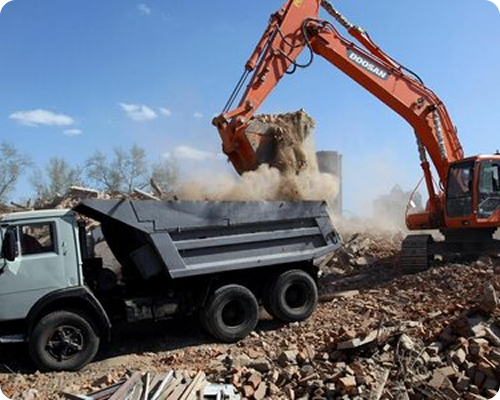
Да, наши машинисты обладают профильным опытом для работы с аварийными и нестандартными постройками. Мы проводим демонтаж предельно аккуратно, гарантируя полную сохранность соседних зданий на участке.
Как быстро начинается работа?
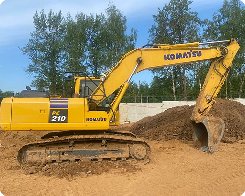
Наличие свободных машин в автопарке ЭКО-ВОРТЕКС позволяет нам реагировать на заявки без долгих задержек. Мы оперативно подаем технику на объект и начинаем демонтажные работы в строго согласованное время.
Выдаете ли вы документы?
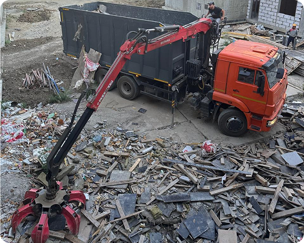
Легальность является нашим главным приоритетом. По завершении очистки территории каждый заказчик получает пакет закрывающих документов, подтверждающих, что утилизация мусора прошла полностью официально.